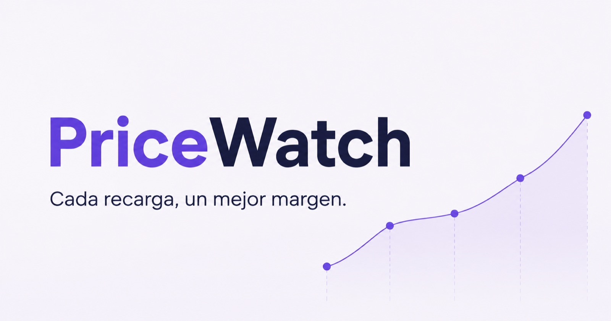

Interfaces
React · Next.js · Preact · TypeScript · JavaScript · Vite · Vinext · Tailwind CSS · Bootstrap
DESARROLLADOR FULL-STACK · VENEZUELA
Productos completos para operar negocios, automatizar procesos y convertir ideas complejas en herramientas claras.
TECNOLOGÍAS EN USO
El stack está construido a partir de los repositorios y proyectos reales disponibles: interfaces, APIs, bases de datos, automatización y operación.
GITHUB PÚBLICO @RafaelPinto123 1 repositorio público visible · MySports ↗React · Next.js · Preact · TypeScript · JavaScript · Vite · Vinext · Tailwind CSS · Bootstrap
Node.js · Fastify · Laravel · PHP · Python · Go · REST · GraphQL · WebSocket
PostgreSQL · MySQL · SQLite · Cloudflare D1 · Drizzle ORM · migraciones · respaldos
Docker · Caddy · Cloudflare Workers · R2 · GitHub Actions · Linux · métricas y logs
WhatsApp · Playwright · Puppeteer · Google APIs · SSE · OCR · webhooks · colas
Pruebas de integración · OpenAPI · seguridad · observabilidad · documentación · recuperación
TRABAJO SELECCIONADO Y ARCHIVO
17 proyectos entre GitHub y el espacio de trabajo, organizados por producto y área.
Plataforma multiempresa para operar ventas, atención, CRM, catálogos y agendas desde WhatsApp, con colas persistentes y auditoría.

Motor de comparación de precios y márgenes para recargas digitales, con cotizaciones persistentes, comisiones y reglas de decisión explicables.
Base de comercio e inventario preparada para operar con API Laravel, panel React, PostgreSQL, observabilidad y despliegue reproducible.
Explorador deportivo con países, ligas, equipos, jugadores, árbitros, estadios, temporadas y tablas de posiciones consumidos desde APIs.
Ver en GitHub ↗Contabilidad para profesionales y firmas venezolanas: expedientes, libros, dimensiones, cierres y consolidación.
Gestión operacional por agencias y roles, con reportes, colas de contenido, GraphQL y WebSocket.
Ventas, inventario y punto de venta con operación observable, métricas, colas y panel administrativo.
Portal inmobiliario y backoffice con catálogo, asesores, captaciones, campañas y kit de marketing.
Repositorio ↗Flujo local para descargar y transformar video: jumpcut, mezcla, subtítulos, doblaje y clips.
Repositorio ↗Simulador auditable de futuros BTCUSDT con datos públicos, backtesting, control de riesgo y persistencia.
Microservicio autohospedado y de solo lectura para verificar abonos sin ceder credenciales.
Venta de boletos con inventario transaccional, reservas, pagos, ganadores y operación privada.
Aplicación de mensajería con frontend Next.js y servicios reproducibles sobre PostgreSQL y Docker.
Operación de productos digitales y recargas con API Laravel, administración React y seguridad moderna.
Ecosistema de paneles y automatizaciones para equipos, contenido, medios y comunicación en tiempo real.
Migración operativa hacia Conversa, eliminando dependencias frágiles y aislando evidencia histórica.
Repositorio ↗Experiencia web comercial construida en React/Vite para una operación de productos digitales.
Repositorio ↗No hay proyectos que coincidan con esta búsqueda.
CÓMO TRABAJO
No me limito a la interfaz. Diseño el flujo, modelo los datos, conecto los servicios y dejo la operación lista para mantenerse.
Flujos útiles, estados claros y decisiones de alcance.
Frontend, API, datos, integraciones y pruebas.
Docker, observabilidad, seguridad y recuperación.
Documentación y evolución basada en evidencia.